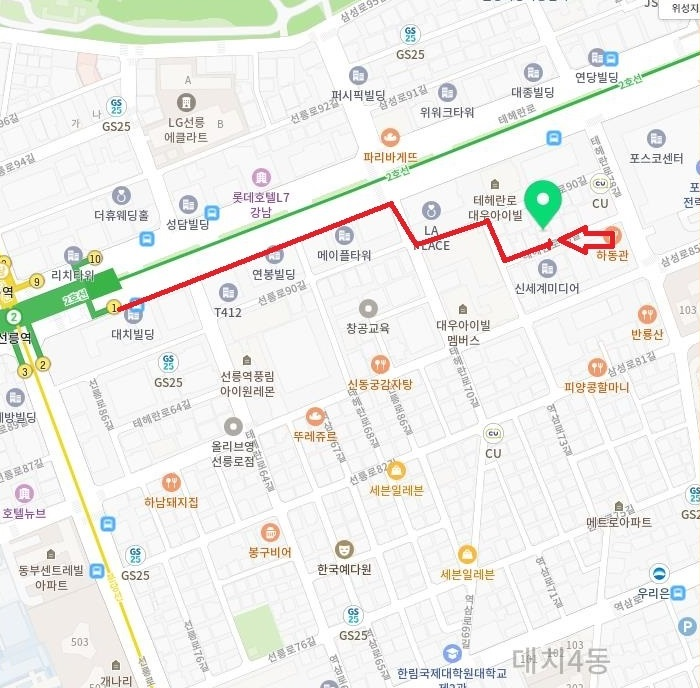
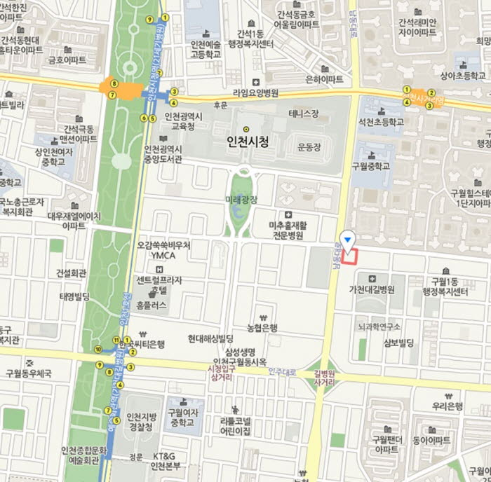

오시는 길
한 분 한 분의 마음에 진심으로 귀 기울이고 따뜻함으로 동행하겠습니다.


상세 정보
서울 선릉지점
- 주소: 서울시 강남구 테헤란로78길 14-10 약산빌딩 7층 마음동네
- 전화: 02-851-1934
- 이메일: mudn2@naver.com
- 오는 길: 선릉역 1번 출구로 나오신 후 직진하셔서 신한은행 앞 건널목을 건넙니다. 던킨도너츠까지 오셔서 우회전하세요. 언덕을 살짝 올라오신 후 대치대우아이빌명문가 앞에서 좌회전하세요. GS편의점에서 우회전. 호텔 컬리넌에서 좌회전. 호텔 컬리넌 옆옆 건물입니다. 건너편 1층에 순두부 식당이 있습니다.
- 주차: 시간당 5000원
인천 구월지점
- 주소: 인천시 남동구 구월동 1199번지 정락빌딩 502호(길병원 건강검진센터 옆)(인천시 남동구 구월남로 172 정락빌딩 502호(길병원 건강검진센터 옆))
- 전화: 032-431-0088, 010-2539-1007
- 이메일: mudn2@naver.com
- 오는 길:
대중교통 버스를 이용하시면,
간선버스: 11, 22, 34, 41, 77, 111-2, 103-1, 700-1, 700
지선버스: 532, 534, 536
광역버스: 1400
좌석버스: 3030, 800
급행버스: 903, 907
대중교통 국철을 이용하시면
동암역 남부에서 승차하실 경우
간선버스: 34,77,103-1,111-2
지선버스: 532, 535, 536, 537
급행버스: 903, 907
대중교통 인천지하철을 이용하시면
간석오거리역에서 승차하실 경우
지선버스: 532, 536
간선버스: 77, 103-1
자가용 제2경인고속도로 이용하시면
남동IC 에서 ‘인천시청, 인천지방경찰청, 문학경기장’ 방면으로 우측방향, 남동대로를 따라 2.82km 이동 후 우회전, 구월남로를 따라 35m 직진
자가용 경인고속도로 이용하시면 가좌IC고가교에서 ‘서울, 노인종합문화회관, 남동공단, 시청, 석바위’ 방면으로 이동 후 간석오거리에서 ‘시청,길병원’ 방면으로 좌회전 후 남동대로를 따라 1.53km 이동 - 주차: 1시간 무료. 1시간 이후 30분당 500원